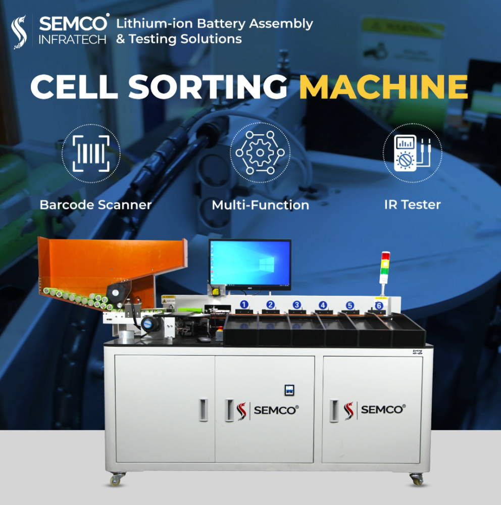

Are you someone looking for a cell sorting machine to streamline your laboratory's research processes? Are you seeking efficient and precise methods to isolate specific cell populations for your experiments or clinical applications?
In this article, we'll delve into the essential considerations and strategic approaches necessary to acquire the ideal cell sorting machine for your unique needs. Whether you're a seasoned researcher or new to the field, establishing a comprehensive strategy for procuring cell sorting machines is crucial for maximizing productivity and advancing scientific discovery.
Read the article to learn more about finding good cell-sorting machines in the market.
Understand Your Needs and Requirements
The needs of everyone are different. Therefore, you must first find out what is your need. What is the plant size and what type of machine that you want? Will the machine you are looking for fill in your requirements? What is the quality of the product you are planning to produce? Will you be working on one or all three types of cells (prismatic, pouch, and cylindrical)? These are some of the most important questions. You must find answers when evaluating different cell sorting machines. By clearly understanding your needs, you can eliminate the option that are not competent enough to find machines best suited to meet your specific requirements.
Researching Available Options
Once you have a clear understanding of your needs, the next step is to research the available options. There are several different types of cell sorting machines on the market, each with its unique features and capabilities. Some machines are better suited for high-throughput applications, while others are designed for high-purity sorting. By researching the available options, you can gain a better understanding of the features and capabilities that are most important to you.
Considering Manufacturer's Reputation and Track Record
In addition to researching the available options, it's also important to consider the reputation and track record of the manufacturers. Look for manufacturers with a proven track record of producing high-quality, reliable cell sorting machines. Reading customer reviews and testimonials can also provide valuable insight into the performance and reliability of different machines. By choosing a machine from a reputable manufacturer, you can have confidence in the quality and reliability of your purchase.
Evaluating Technical Support and Service
Another important factor to consider is the level of technical support and service offered by the manufacturer. Cell sorting machines are complex pieces of equipment that require regular maintenance and occasional repairs. Choosing a manufacturer that offers comprehensive technical support and service can provide peace of mind and ensure that your machine continues to operate at peak performance.

Considering Cost and Long-Term Value
Cost is also an important consideration when buying a cell sorting machine. While it's important to stay within budget, it's equally important to consider the long-term value and performance of the machine. A lower upfront cost may seem attractive, but it's important to consider the total cost of ownership, including maintenance, repairs, and potential upgrades. By considering the total cost of ownership, you can make a more informed decision about which machine offers the best overall value.
Hands-On Testing and Evaluation
Finally, don't overlook the importance of hands-on testing and evaluation. Many manufacturers offer the opportunity to test their machines in a real-world setting before making a purchase. This hands-on testing can provide valuable insight into the performance, capabilities, and ease of use of different machines. By taking advantage of these opportunities, you can make a more informed decision and choose a machine that meets your needs.
Conclusion: Developing a Clear Strategy
In conclusion, buying a cell sorting machine requires careful consideration and planning. By understanding your specific needs, researching the available options, considering the reputation of the manufacturers, evaluating technical support and service, weighing the cost, and conducting hands-on testing, you can develop a clear strategy for buying a cell sorting machine that meets your needs and provides long-term value. With the right strategy in place, you can make a confident and informed decision about which machine is the best fit for your needs.